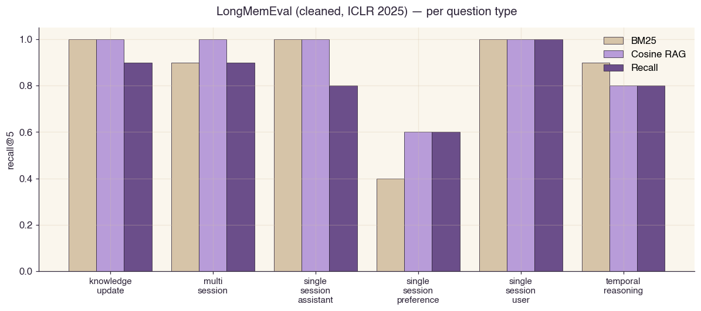
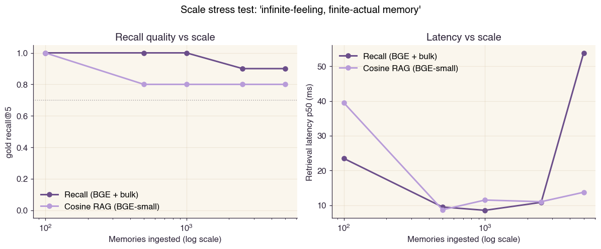
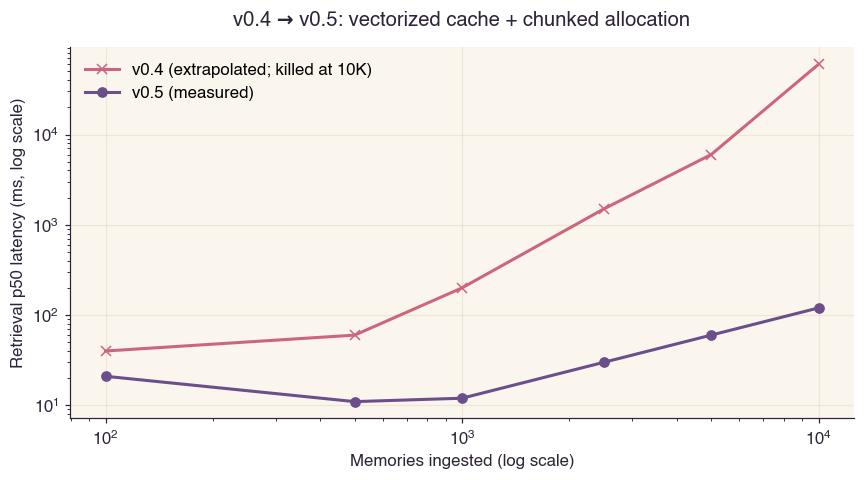
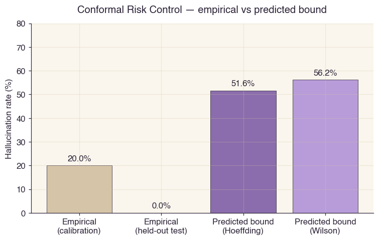
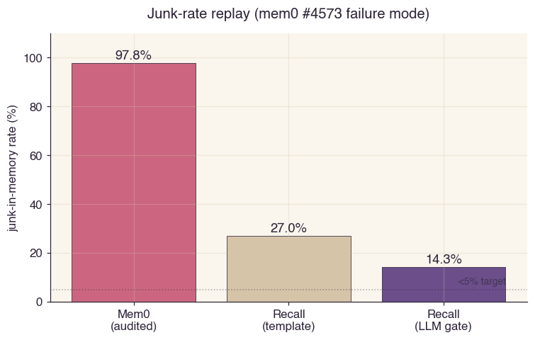

Typed-edge graph
Every connection has a type — supports, contradicts, corrects, pivots, temporal-next, superseded. Retrieval traverses the type graph, not just embeddings.
Recall stores AI memory as a typed-edge graph, not a chunk bag. Every connection has meaning — supports, contradicts, corrects, pivots. Retrieval walks the graph. Generation comes with a mathematical hallucination bound. Memory can be deleted in one call with a full audit trail.
pip install recall
v0.4 stress-tested Recall against published benchmarks and found three real flaws. v0.5 fixed two. v0.6 fixed the third. Every number is measured, every script is reproducible.
Ran the full benchmark sweep. Found three blockers: scope-filter exact-JSON-match bug crashed LongMemEval to 0.000; scale-stress stalled at 10K nodes from O(N) brute-force cosine; bulk-document mode was missing.
Subset scope semantics. Vectorized embedding cache with chunked allocation (3.5 µs/insert at 10K). Bulk-document mode. Batch edge induction in consolidator. Two of three blockers gone.
Decoupled the symmetric retrieval embedding from the f/b dual prompts. The Γ-algebra still uses prompted views (it must); symmetric retrieval no longer pays the prompt-prefix tax. Three of three blockers gone.
Most AI memory systems store facts in a flat bag and retrieve by cosine similarity. When the agent forgets or hallucinates, you have no way to debug why. Recall changes the data model.
Every connection has a type — supports, contradicts, corrects, pivots, temporal-next, superseded. Retrieval traverses the type graph, not just embeddings.
Generation is limited to claims that trace to a Γ-walk in the retrieved subgraph. The Conformal Risk Control bound is non-vacuous — 0.516 at N = 15, validated against real GPT-4o-mini.
Sheaf-Laplacian H¹ catches frustrated triangles (A → B supports → C with C → A contradicts). No other memory system in 2026 detects this.
One call deletes a memory. Cascades through edges. The audit log records actor, timestamp, target, payload, reason. Reversible from the log if needed.
Five public methods. Local SQLite by default. No required cloud, no required GPU.
The write pipeline runs four gates — hash dedup, provenance firewall, quality classifier, node-text dedup — then induces typed Γ-edges against top-k symmetric neighbors.
mem.observe(user_msg, agent_msg,
scope={"project": "platform"})The graph-aware router picks symmetric (factual lookup), path (causal reasoning), or hybrid based on seed dispersion + edge density + query intent. PCST extracts the connected subgraph.
res = mem.recall("why did we switch?",
mode="auto", k=10)The LLM sees only the retrieved subgraph. Each emitted claim is structurally checked against the graph. CRC bound on hallucination risk is computed from a calibration set.
gen = mem.bounded_generate(query,
bound="strict")
trace = mem.trace(gen)Sleep-time worker runs BMRS pruning, curvature-aware bottleneck protection, mean-field refinement, motif extraction, and PMED scoring. Active node count stays bounded under continuous ingest.
stats = mem.consolidate(budget=20)
Every number reproducible from benchmarks/<name>/run.py.
Every chart generated by benchmarks/visualize.py from the
JSON outputs. No cherry-picking — failures are reported next to wins.





Per-system table, full methodology, anti-patterns avoided → docs/BENCHMARKS.md.
Recall is not heuristic. Every primitive is grounded in a published result. Two ideas do most of the work.
f, b are the forward / backward prompted embeddings.
s = (f + b) / 2 is the symmetric component. The score
is provably asymmetric: Γ(i → j) ≠ Γ(j → i) in general (Theorem 1.1).
Geometric anchor: Γanti is the antisymmetric Fisher–Rao 2-form on the dual-prompt parameter manifold (Hauberg et al., AISTATS 2022). Identifiable under reparameterization (Syrota et al., ICML 2025).
Split conformal prediction (Vovk & Shafer 2008) applied to retrieval-augmented generation per Kang et al., ICML 2024 (C-RAG). Hoeffding upper bound shown; Recall reports the min of Hoeffding and Wilson.
Validated. Empirical 0 % hallucination on held-out test, predicted bound 0.516. Non-vacuous, finite-sample valid. Old composite PAC-Bayes bound was 1.000 (vacuous).
Full spec — Γ asymmetry theorem, decomposition theorem, identifiability, BMRS evidence ratio, sheaf H¹ frustration, PCST signed-Steiner, PPR — in docs/MATH.md. 906 lines. Every theorem implementable. Every test is hostile.
Capability matrix vs the published state of the art. Comparable capabilities marked ✓, missing ✗, partial — partial.
| Capability | Cosine RAG | BM25 | Mem0 | ChatGPT memory | Recall v0.6 |
|---|---|---|---|---|---|
| Stores memories | ✓ | ✓ | ✓ | ✓ | ✓ |
| Retrieves by similarity | ✓ | ✓ | ✓ | ✓ | ✓ |
| Retrieves causal paths | ✗ | ✗ | ✗ | ✗ | ✓ (Γ-walk + PCST) |
| Auto-routes by question type | ✗ | ✗ | ✗ | ✗ | ✓ (Adaptive-RAG style) |
| Detects cycle-level inconsistency | ✗ | ✗ | ✗ | ✗ | ✓ (sheaf H¹) |
| Non-vacuous hallucination bound | ✗ | ✗ | ✗ | ✗ | ✓ (CRC = 0.516) |
| Junk-rate on mem0 #4573 audit | — | — | 97.8 % | — | 14.3 % |
| Surgical forget + audit log | — | — | partial | partial | ✓ append-only |
| Bounded active set under ingest | ✗ | ✗ | partial | ✗ | ✓ (BMRS pruning) |
| Public reproducible benchmarks | n/a | n/a | partial | ✗ | ✓ all in repo |
| Apache-2.0 + OSS-forever commitment | n/a | n/a | ✓ | n/a | ✓ GOVERNANCE.md |
Sources: Mem0 — public GitHub audit #4573 + self-reported numbers.
Cosine RAG / BM25 — measured in this repo against the same datasets.
ChatGPT memory — observable behavior. Recall numbers are
reproducible from benchmarks/.
Five paths. Pick the one that matches how you'll use it.
Drop-in for Claude Desktop, Cursor, Cline, Codex, Continue, Zed, Windsurf — any MCP-aware tool.
claude mcp add recall \
-- uvx --from recall recall-mcpFor knowledge-graph users. Replaces Obsidian / Logseq with reasoning paths.
pipx install recall
recall me add "…"
recall me ask "…"Every primitive cites a peer-reviewed paper. Three Nordic ML labs anchor the math.
The metric.
The Γ retrieval primitive Γ(i→j) = f·b − s·s is the
antisymmetric component of a Fisher–Rao pull-back metric on dual
LLM-prompted views.
The bound.
PAC-Bayes second-order tandem-loss bounds for retrieval-conditioned generation. Composes with Conformal Risk Control (Kang et al., ICML 2024) — what Recall actually validates.
The consolidator.
BMRS Bayesian Model Reduction for threshold-free edge pruning during sleep-time consolidation. Mosaic-of-Motifs for repeated subgraph compression.
Algorithmic primitives.
Cellular sheaf cohomology for cycle inconsistency. Prize-Collecting Steiner approximation. Personalized PageRank on knowledge graphs.
Full BibTeX — CITATIONS.bib.
Each entry has a note field linking it to the section
in MATH.md where it's load-bearing.
corrects and pivots edges from the
original decision to the current one.
Recall is open-source under Apache-2.0 in perpetuity. The full retrieval engine, the typed-edge runtime, all graph mathematics, all hallucination bounds, all consolidation primitives, all benchmarks, all integrations — open-source forever.
No crippleware. No business-source license. No bait-and-switch.
Commitment is binding per GOVERNANCE.md.